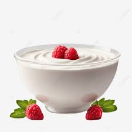

Jogurt grecki
Wprowadzenie
Jogurt grecki to popularny rodzaj jogurtu, który zyskał dużą popularność ze względu na swoją gęstą konsystencję i bogactwo białka. Oto kilka cech charakterystycznych jogurtu greckiego:
Gęsta konsystencja
Jogurt grecki jest zazwyczaj znacznie gęstszy niż tradycyjny jogurt. Jest to wynik procesu odsączania serwatkowego, podczas którego większość płynu zostaje usunięta, pozostawiając gęstą masę.
Wysoka zawartość białka
Jedną z głównych zalet jogurtu greckiego jest jego wysoka zawartość białka. W porównaniu z tradycyjnym jogurtem, jogurt grecki zawiera zazwyczaj dwukrotnie więcej białka, co czyni go świetnym wyborem dla osób dbających o zwiększenie spożycia tego składnika odżywczego.
Niski poziom węglowodanów
Jogurt grecki jest zazwyczaj niskowęglowodanowy, co oznacza, że ma niższy poziom cukru niż niektóre inne jogurty. To sprawia, że jest bardziej odpowiedni dla osób, które starają się ograniczyć spożycie cukru.
Bogactwo wapnia
Podobnie jak inne jogurty, jogurt grecki jest dobrym źródłem wapnia, który jest niezbędny dla zdrowych kości i zębów
Wszechstronność
Jogurt grecki można spożywać samodzielnie, ale również używać jako składnik wielu potraw. Doskonale nadaje się do przygotowywania sosów, dipów, koktajli czy deserów.
Dostępność różnych wariantów
Na rynku dostępne są różne warianty jogurtu greckiego, w tym wersje naturalne, o smakach owocowych oraz wzbogacone o dodatkowe składniki, takie jak miód czy orzechy.
Jogurt grecki jest nie tylko smaczny, ale również stanowi wartościowy składnik diety, który może przyczynić się do poprawy zdrowia i samopoczucia.